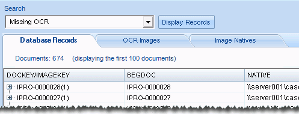
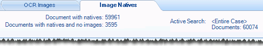

Note: The options available for
processing image files with this method are quite limited. Eclipse
Eclipse Administration allows you to address the issue of missing image files or text (EXTRACTEDTEXT field content) in a case as follows:
If the case has native files but is missing images, the missing files can be created from the native files.
If the case has image files (TIFF or JPG) but is missing text, the missing text can be created from image files.
If the case has single- or multi-page PDF files but is missing text, the missing text can be created as follows:
Load the PDFs as native files, not as image files.
Create images from the PDFs as explained in Create Image Files.
Create text from the images as explained in Create OCR Text.
Although the following procedures can be performed on an entire case, it is much more typical that you will create/save a search to find only the documents that are missing images and/or OCR. For example, a search on the HASIMAGE field (No) or your EXTRACTEDTEXT field (Not Set) will identify all documents that are missing images or OCR. If text exists but need to be replaced, then use another type of search to identify the needed set of documents.
|
|
Note: The options available for
processing image files with this method are quite limited. Eclipse
|
This page contains the following content:

Complete the following steps to prepare for bulk processing:
If a saved search does not exist for the documents to be processed, create and save the search in Eclipse.
Start Eclipse Administration and log in as an Eclipse administrator.
|
|
Note: Only members of the Super Admin group can perform this procedure. |
On the Case Management ribbon, click Process. Wait as the Eclipse OCR and Imaging application starts.
Select the needed managing client and case.
Continue with Create
OCR Text and/or
For each document in a selected document set (saved search results or entire case) that has an image file, the following procedure will create text and place it in the corresponding EXTRACTEDTEXT field.
|
|
Note: Text that exists for any of the documents in the selected document set will be overwritten automatically. |
To create text for multiple documents in a case:
Complete Get Started.
In the Search list, select the needed document set, either <Entire Case> or a saved search.
Click Display Records and review document details in the Database Records tab to make sure it meets your expectations. The following example shows that 674 documents exist in the document set (based on a saved search).

Click the OCR Images tab and review the details at the top of the tab to ensure it also matches your expectations.
To re-index the case after OCR is created, select the Index after process completes option. (Or clear the option and make a note to re-index the case at a later time.)
Click Run OCR and watch progress details.
When the process completes, click View Log File; read file details and identify issues to be resolved.
When finished, click X to close the Eclipse OCR and Imaging application.
For each document in a selected document set (saved search results or entire case) that does not have an image file but does have a native file, the following procedure will create an image file and place it in the case’s image file location.
The image files created will be black-and-white, 300 DPI TIFF files.
|
|
Note: Image files that exists for any of the documents in the selected document set will be overwritten automatically. |
To create images for multiple documents in a case:
Complete Get Started.
In the Search list, select the needed document set, either <Entire Case> or a saved search.
Click Display Records and review document details in the Database Records tab to ensure that it matches your expectations. See the example in the previous procedure.
Click the Image Natives tab and review the details at the top of the tab to ensure it also matches your expectations. The following figure shows results for an entire Eclipse case. This example indicates that native files exist for nearly all documents in the case, and that 3,595 of those native files can be used for documents that are missing images.

Click Run Imaging and watch progress details.
When the process completes, click View Log File; read file details and identify issues to be resolved.
When finished, click X to close the Eclipse OCR and Imaging application.